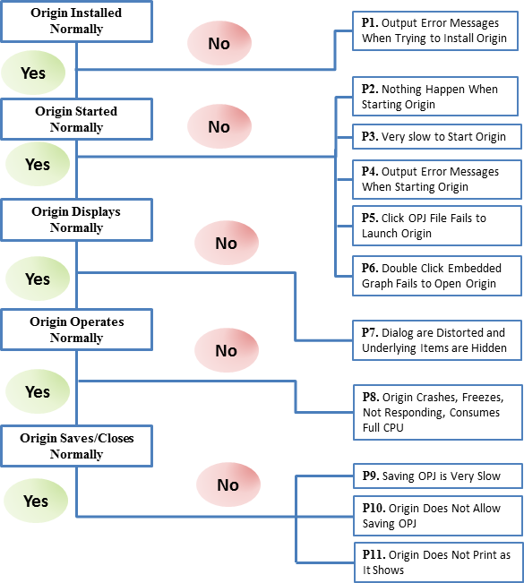

FAQ-780 Was soll ich tun, wenn Origin aus unbekannten Gründen nicht funktioniert?
origin-not-work
Letztes Update: 30.01.2023
Diese Seite der Schnellhilfe bietet eine allgemeine Routine, um Anwender bei der Selbstdiagnose zu unterstützen, wenn in Origin ein Problem aus unbekannten Gründen auftritt.
-
- 
Origin kann nicht normal installiert werden.
P1. Ausgabe von Fehlermeldungen bei dem Versuch, Origin zu installieren
Wenn Ihnen beim Start von Origin die Fehlermeldung "Fehler beim Installieren von ikernal.exe" ("error installing ikernal.exe") angezeigt wird, wird dies normalerweise durch Ihren Login-Account von Windows verursacht, der nicht über die notwendigen Installationsrechte verfügt. Bitte lesen Sie Lösungsmöglichkeiten dazu auf dieser Seite in der Schnellhilfe.
Origin kann nicht normal gestartet werden.
P2. Es passiert nichts beim Start von Origin.
Als Erstes müssen Sie das neueste Service Release unter diesem Link herunterladen, Ihr aktuelles Origin deinstallieren und mit dem neu heruntergeladenen Installer neu installieren. Stellen Sie sicher, dass Sie während der Neuinstallation einen neuen Ordner als Anwenderdateiordner festlegen. Wenn weiterhin ein Problem besteht, können Sie weitere Lösungen auf dieser Seite der Schnellhilfe finden.
P3. Origin startet sehr langsam.
Es gibt mehrere Gründe, die dieses Problem verursachen könnten. Prüfen Sie folgende Situationen nacheinander:
- Wenn der Anwenderdateiordner (UFF) auf einen Netzwerkpfad oder ein Roaming-Profil festgelegt ist, ändern Sie diesen in einen lokalen Pfad.
- Manchmal geraten Druckertreiber mit Origin in einen Konflikt. Setzen Sie den Standarddrucker auf dem lokalen Rechner dann auf einen anderen Drucker zurück.
- Wenn Sie eine Concurrent-Lizenz haben und der Flexnet-Server sich weit entfernt befindet (zum Beispiel in einem anderen Land) oder in einem Netzwerk, mit dem eine Verbindung nur sehr langsam hergestellt werden kann, beruht die Origin-Operation in hohem Maß auf dem Netzwerkstatus. Um zu bestimmen, ob das Netzwerk das Öffnen von Origin in solch einem Fall langsam macht, trennen Sie das Netzwerk temporär oder leihen Sie eine Lizenz von dem Server und starten Sie Origin neu, um zu sehen, ob es schneller startet.
P4. Ausgabe von Fehlermeldungen bei dem Versuch, Origin zu starten
- Wenn Sie fehlende DLL-Fehlermeldungen beim Start von Origin erhalten, bedeutet dies, dass die erforderlichen Microsoft DLLs von Origin auf Ihrem Computer fehlen. Bitte lesen Sie Lösungsmöglichkeiten dazu auf dieser Seite in der Schnellhilfe.
- Wenn Sie beim Start von Origin die Fehlermeldungen "System Folder Build Failed", "X-Function failed to execute" erhalten, können Sie auf dieser Seite der Schnellhilfe weitere Lösungen nachlesen.
P5. Origin wird nicht durch Klicken auf die OPJ-Datei gestartet.
Dieses Problem besteht seit Windows Vista und nicht ausschließlich für Origin. Normalerweise lautet die Meldung There is a problem sending the command to the program (Es gibt ein Problem beim Senden des Befehls an das Programm). Der Fehler tritt nur bei einigen PCs aus. Noch haben wir keine Lösung dafür. Diese Seite der Schnellhilfe stellt mehrere Möglichkeiten bereit, mit denen Sie versuchen können, das Problem zu beheben.
P6. Origin wird nicht durch Doppelklick auf das eingebettete Diagramm geöffnet.
Wenn Sie die Situation eintritt, dass das eingebettete Origin-Diagramm durch einen Doppelklick in Word/PowerPoint nicht in Origin geöffnet wird, lesen Sie bitte weitere Lösungsmöglichkeiten auf dieser Seite der Schnellhilfe.
Origin wird nicht normal angezeigt.
P7. Dialoge sind verzerrt und zugrundeliegende Elemente werden verborgen.
Wenn ein Bildschirm mit hoher Auflösung und DPI-Einstellung (Mittel - 125% oder Größer - 150% auf der Windows-Seite Systemsteuerung\Anzeige), passiert es möglicherweise, dass das Layout der Origin-Dialoge zusammengedrängt und die Symboleistenschaltflächen winzig erscheinen. Origin verbessert die Anzeige auf hochauflösenden Bildschirmen kontinuierlich. Siehe Einzelheiten in dieser FAQ. Bitte führen Sie ein Upgrade Ihres Origins auf die aktuelle Version durch. Sie können über das Menü Hilfe: Hilfedateien erhalten/Nach Updates suchen prüfen, ob eine neue Version verfügbar ist, oder den Installer einer neuen Version (EXE oder ZIP) bzw. das Patch eines Service Releases von unserer Webseite herunterladen.
Sollten Sie eine alte Origin-Version verwenden und momentan kein Upgrade durchführen wollen, können Sie versuchen, den Eintrag in die Registry, der die Dialoge, wie in diesem Schnellhilfeartikel beschrieben, verwaltet, zu löschen.
Origin funktioniert nicht normal.
P8. Origin stürzt ab, friert ein, reagiert nicht, blockiert die gesamte CPU, kann keine Grafiken exportieren.
- Origin stürzt aus verschiedenen Gründe, z.B. beim Verwenden eines bestimmten Hilfsmittels, beim Durchführen von bestimmten Operationen, beim Arbeiten mit einem/r spezifischen Origin-Projekt/-Arbeitsmappe/-Diagramm. Diese Seite der Schnellhilfe bietet eine systematische Routine beim Lösen von Abstürzen.
- Beim Arbeiten mit Excel in Origin reagiert Origin manchmal nicht und zeigt einige Excel-Fehlermeldungen. Zurzeit helfen Ihnen möglicherweise die Lösungsvorschläge auf dieser Seite der Schnellhilfe.
- Sollte Origin aus unbekannten Gründen nicht funktionieren, reagiert es zum Beispiel nicht, wenn Sie Grafiken exportieren oder ein Menü wählen, oder zeigt eine Meldung wie External call execution error oder Fail to find xxx.dll, lesen Sie bitte diese Schnellhilfe, um eine Lösung zu finden.
- Wenn Sie bemerken, dass eine spezifische Origin-Projektdatei die gesamte CPU Ihres Computers blockiert oder eine OPJ-Datei ungewöhnlich groß ist, können Sie den Anweisungen auf dieser Seite der Schnellhilfe folgen.
Origin kann nicht normal speichern/schließen/drucken.
P9. Das Speichern eines OPJ ist sehr langsam.
- Wenn Ihr Origin-Projekt sehr groß ist, haben Sie möglicherweise das Gefühl, dass Origin langsam ausgeführt wird. Die einfachste Möglichkeit, Origin zu beschleunigen, besteht darin, Ihre Origin-Projektdatei in mehrere kleinere zu unterteilen.
- Wenn Ihr Origin-Projekt nicht so groß ist (unter 100M Bytes), es aber trotzdem ungewöhnlich lang (~ mehrere Minuten) dauert, wenn Sie versuchen, die Datei zu speichern, ist das Problem am wahrscheinlichsten auf den Drucker zurückzuführen. In dieser Situation können Sie versuchen, von dem Standarddrucker auf einen anderen zu wechseln und das Origin-Projekt neu zu speichern, um zu sehen, ob das Problem weiterhin besteht oder nicht.
P10. Origin lässt das Speichern des OPJ nicht zu.
Manchmal passiert es Ihnen vielleicht, dass Origin das Speichern der aktuellen OPJ-Datei nicht zulässt, während die Fehlermeldung Bitte alle geöffneten Dialoge vor dem Schließen von Origin schließen. angezeigt wird. Dieses Mal können Sie jedoch keinen offenen Dialog finden und ihn daher nicht schließen. Diese Seite der Schnellhilfe stellt zwei Lösungsmöglichkeiten für Sie bereit.
Falls Ihr Projekt eine oder mehrere Excel-Mappen enthält und Sie die Fehlermeldung erhalten, dass die Projektdatei aufgrund eines externen Speicherfehlers der Excel-Mappe fehlgeschlagen ist beim Speichern des Projekts, lesen Sie bitte diese Seite in der Schnellhilfe, um das Problem zu lösen.
P11. Origin druckt nicht, was es anzeigt.
- Der erste Schritt vor dem Drucken ist der Wechsel zur Seitenansicht (im Menü Datei: Seitenansicht), um zu gewährleisten, dass das, was Sie sehen, auch das ist, was auf dem Papier gedruckt wird.
- Manchmal unterscheidet sich das, was tatsächlich auf dem Papier gedruckt wird, von Ihren Erwartungen, z.B. kann die Layerdimension auf der Druckseite falsch sein, die Diagrammbeschriftungen sind verrutscht etc. Diese Seite der Schnellhilfe bietet Lösungen für jede dieser möglichen Situationen.
- Wenn Sie die Diagramme als EMF/PDF/EPS exportieren oder sie in Word bzw. PowerPoint kopieren und das Diagramm wird abgeschnitten, verkleinert oder es hat einen extragroßen Rand, dann lesen Sie bitte diese Seite der Schnellhilfe, um eine Lösung zu finden.
Verwandte Themen
Schlüsselwörter:crash, Absturz, nicht funktionstüchtig, Bug, Lösung, Fehlermeldungen, Fehlerbehebung